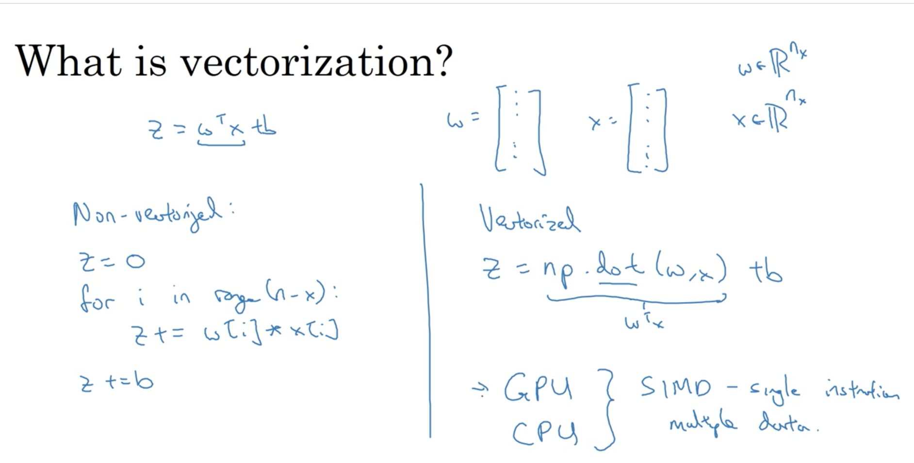

contents
- 1. logistic regression as a neural network
- 1.1. binary classification
- 1.2. logistic regression
- 1.3. logistic regression cost function
- 1.4. gradient descent
- 1.5. derivatives
- 1.6. more derivative examples
- 1.7. computation graph
- 1.8. derivatives with a computation graph
- 1.9. logistic regression gradient descent
- 1.10. gradient descent on m examples
- 2. python & vectorization
- 2.1. vectorization
- 2.2. more examples of vectorization
- 2.3. vectorizing logistic regression
- 2.4. vectorizing logistic regression's gradient output
- 2.5. broadcasting in python
- 2.6. a note on python/numpy vectors
- 2.7. quick tour of jupyter/ipython notebooks
- 2.8. explanation of logistic regression cost function
- 2.9. programming assignments
1. logistic regression as a neural network
1.1. binary classification
维度为(64, 64, 3)的图片 ===> img vector: x=维度为(64*64*3=12288, 1)的列向量。()
个训练样本：个测试样本。
表示一个的训练样本矩阵,在python里就是X.shape=(n_x,m)
表示一个的向量,在python里是Y.shape=(1,m)
1.2. logistic regression
given , want
params:
output:
1.3. logistic regression cost function
表示第i个样本。
Loss(error) function只针对一条训练样本：
- square error的loss function:
- logistic regression的loss function:
if , want large, want large
if , want small
Cost function针对全体训练样本:
1.4. gradient descent
lr的是一个凸函数，所以有全局最优。 因为有全局最优，所以lr的初始化一般是0，不用随机。梯度下降：不断重复直到收敛。后续，用来指代。梯度下降的公式：
1.5. derivatives
derivative = slope，就是
1.6. more derivative examples
1.7. computation graph
正向计算图算出输出，算每个参数的梯度就反向算。

1.8. derivatives with a computation graph
写代码时，将记为(最后输出对这个变量的偏导)

1.9. logistic regression gradient descent

1.10. gradient descent on m examples
首先，根据J的公式，可以知道dJ/dw1其实就是对每个样本的dw1求和，然后/m。
每一次迭代，遍历m个样本，算出J/dw1/dw2/db，然后用这些梯度去更新一次w1/w2/b。
但这的for loop太多了。。所以我们需要vectorization!
2. python & vectorization
2.1. vectorization

对于两个100w维的向量进行点乘，vectorization(1.5ms) 比for loop(470ms+)快
2.2. more examples of vectorization
如上图，将维的dw变为一个np.array即可干掉内层的for loop。
2.3. vectorizing logistic regression
可见，整个求的过程可以变成一句话，而求A时，需要封装一个基于numpy的sigmoid函数。
2.4. vectorizing logistic regression's gradient output
2.5. broadcasting in python
A = ndarray([[1,2,3,4],[2,3,4,5],[3,4,5,6]]) # 3*4 calc = A.sum(axis=0) # A的每列求和,得到1*4 calc2 = A.sum(axis=1) # A的每行求和,得到3*1 A/calc.reshape(1,4) #得到一个3*4的矩阵，就是broadcasting。其实等价于A/calc，但为了保险，可以调用reshape(1,4)来确保无误
小结：
2.6. a note on python/numpy vectors
a=np.random.randn(5) # a.shape=(5,)是一个vector(rank 1 array)，不是一个矩阵，所以a.T还是(5,)，np.dot(a,a.T)=np.dot(a.T,a)是个1*1的数字 b=np.random.randn(5,1) # a.shape=(5,1), a.T.shape=(1,5), np.dot(a,a.T)是一个5*5的，np.dot(a.T,a)是一个1*1的矩阵（类似array[[0.444]]）） ## 可以加一句： assert(a.shape == (5, 1)) ## 如果不小心搞了个rank 1 array,也可以手动a.reshape((5,1))=a.reshape(5,1)
2.7. quick tour of jupyter/ipython notebooks
2.8. explanation of logistic regression cost function
单个样本的loss function, log越大，loss越小：

如果是iid（独立同分布），那么，m个样本的cost function，其实就叫对数似然。对他求极大似然估计，其实就是对m个样本求每个cost function的min:
2.9. programming assignments
squeeze
np.squeeze(a, axis=None) ## 删掉维数是一的部分，axis可以是Int/int数组，表示只去掉指定下标的部分，如果该部分维数不是1，会报错 x = np.array([[[0], [1], [2]]]) x.shape=(1,3,1) np.squeeze(x)=array([0,1,2]) # shape=(3,) np.squeeze(x, axis=(2,))=array([[0, 1, 2]]) # shape=(1,3)
把一个shape是(a,b,c,d)的array转成一个type是(bcd,a)的array:
X_flatten = X.reshape(X.shape[0], -1).T
图片的预处理：
- Figure out the dimensions and shapes of the problem (m_train, m_test, num_px, ...)
- Reshape the datasets such that each example is now a vector of size (num_px * num_px * 3, 1)
- "Standardize" the data: 对图片而言，所有元素除以255就可以了